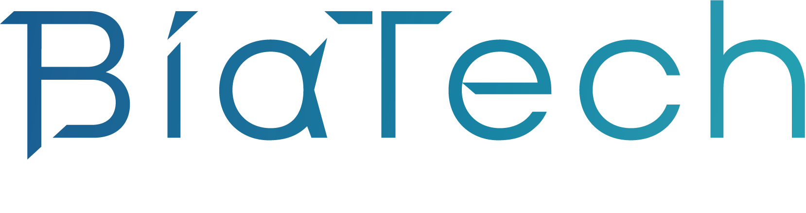

Partnerships
Collaboration that expands mission capability.
CIRO works across industry, national laboratories, and universities to connect fundamental research with consequential aerospace challenges.
Partners
Industry and national laboratory partners
Collaborations that connect research in astrodynamics, autonomy, scientific machine learning, and space sustainability with real mission needs.
National Laboratory of the Rockies
University partners
Academic collaborators
A network of university relationships supporting shared ideas, complementary expertise, and the education of future aerospace researchers.